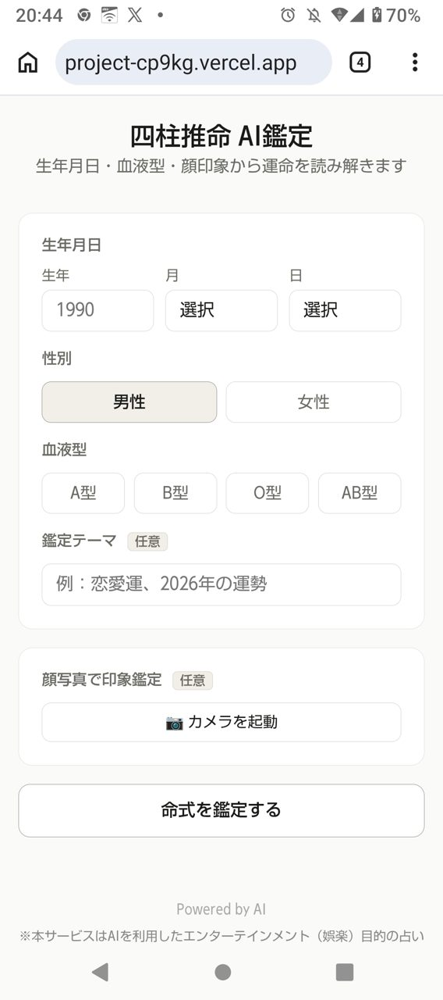

0票四柱推命 AI鑑定
生年月日から四柱推命の命式を計算し、AIが鑑定文を作成するWebアプリです。50代後半・プログラミング未経験から、生成AIと試行錯誤しながら作りました。
AI講評
Claude Code
生年月日に加えて、性別、血液型、鑑定テーマ、顔写真まで入力でき、命式の計算と AI の鑑定文を組み合わせた構成に工夫が見えます。エンタメ目的で正確性を保証しないという注意書きを明記している点も、占いアプリとして誠実です。50代後半から AI と一緒に作り上げたという経緯は、これから始める人の励みになると思います。伸ばせる点は、鑑定結果の見本をトップに載せることです。入力する前に、どんな結果が返るのかが伝わります。
ChatGPT
生年月日から命式を計算し、その結果をAIによる鑑定文へつなげる流れが明快で、専門知識に触れる入口として親しみやすい作品です。プログラミング未経験から試行錯誤して形にした点にも、生成AIを制作の伴走者として活用した意義が表れています。今後は、鑑定文の根拠となった命式の要素や読み方を分かりやすく示すと、利用者が結果を理解しやすくなり、納得感も高まりそうです。